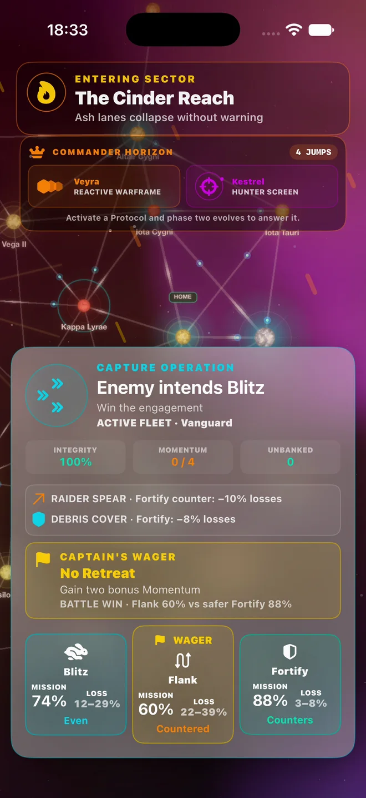

Choose your next risk.
Compare threats, rewards, and battlefield conditions. Take the route your fleet is built to survive.
A dangerous route. A rival waiting. Salvage you could lose. Build your fleet, read the battle, and decide how far to push.
iPhone & iPad · Free with optional purchases
Download the current version. Frontier Runs footage previews the upcoming 1.2.0 update.

Frontier Runs turns a sector into a series of decisions. Each route offers an opportunity. Each battle asks what you are willing to risk.
Compare threats, rewards, and battlefield conditions. Take the route your fleet is built to survive.
Draft modules and protocols. Combine their effects, then choose Blitz, Flank, or Fortify to fit the fight.
Another encounter could change your run. Extract to bank your gains, or push on toward a rival commander.
A closer look at the decisions inside a Frontier Run. Visible forecasts before the order. Battle receipts after it.
Read the beginner’s field guide ↗Understand the run, the tactical choices, and what connects one attempt to the next.
Routes, forecasts, rewards, and extraction—explained without the guesswork.
Build around the modules you find and weigh your salvage against the next risk.
Get Fleet Commander for iPhone and iPad. Frontier Runs arrives with the upcoming 1.2.0 update.